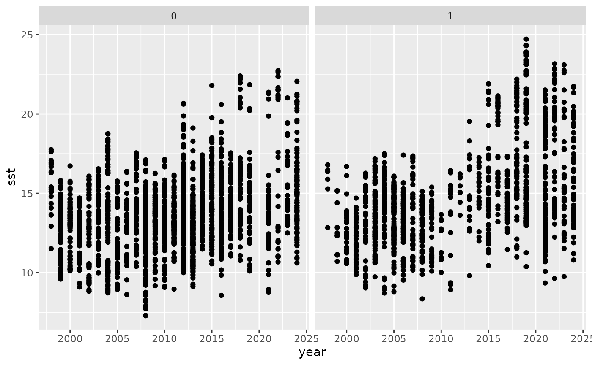
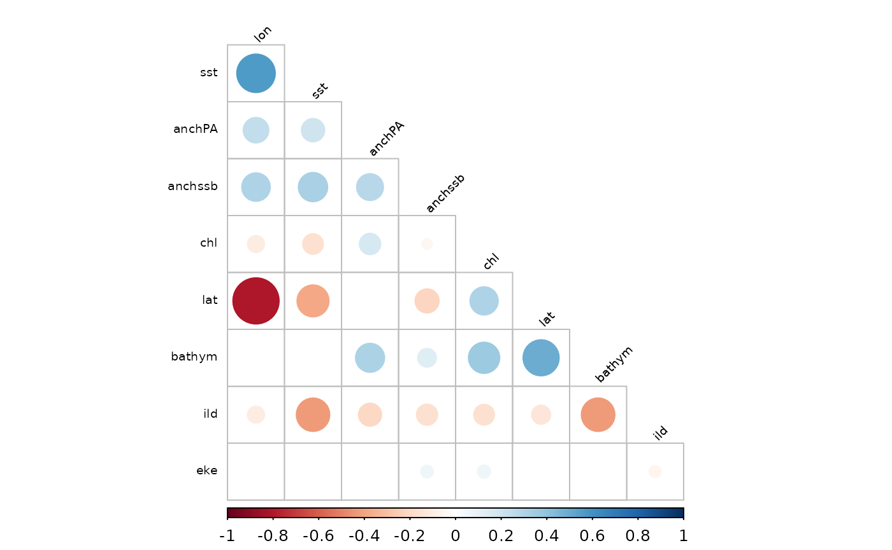
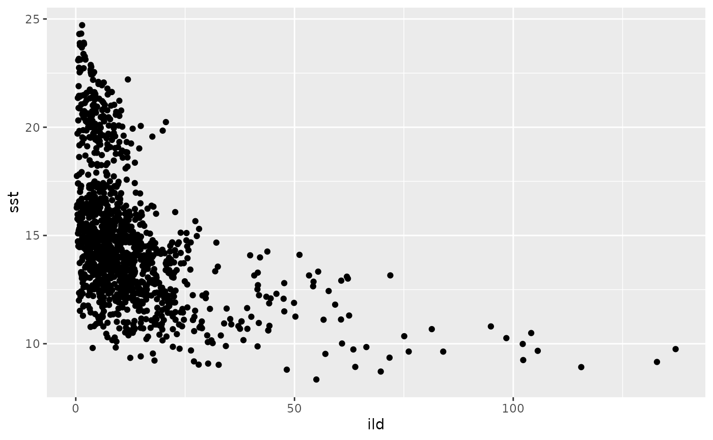

1. Example data preparation workflow
Robert Wildermuth
2025-9-24
Source:vignettes/prepare-data.Rmd
prepare-data.RmdPrepare an example dataset for specied distribution modeling
Here we prepare a sample dataset to create a species distribution model for northern anchovy using the publicly available NOAA SWFSC California Current Ecosystem Survey (CCES) acoustic-trawl sampling observations.
Dependencies
Helper functions to extract environmental predictors
These rely on environmental netcdfs, which are stored in different places!
Note these are hardcoded to Jessie’s repo - change when integrated to package.
#source("/Users/admin/Documents/GitHub/CCSEcolForecasts/R/getROMS.R") # ROMS ocean model variables
# source("./R/getMOM6_gridded.R") # MOM6 ocean model variables
#source("/Users/admin/Documents/GitHub/CCSEcolForecasts/R/getCMEMS_l4chl.R") # CMEMS daily L4 chl
#source("/Users/admin/Documents/GitHub/CCSEcolForecasts/R/getDistLand.R") # Distance to nearst land based on coast shp
#source("/Users/admin/Documents/GitHub/CCSEcolForecasts/R/getBathym.R") # ETOPO bathymetryStep 1: Clean CCES data
First, we start by downloading and cleaning up the CCES data. Download the latest SWFSC CPS trawl observations from ERDDAP
dataInfo <- info('FRDCPSTrawlLHHaulCatch', url = 'https://coastwatch.pfeg.noaa.gov/erddap/')
dataInfo # Metadata## <ERDDAP(TM) info> FRDCPSTrawlLHHaulCatch
## Base URL: https://coastwatch.pfeg.noaa.gov/erddap
## Dataset Type: tabledap
## Variables:
## collection:
## Range: 2003, 4897
## cruise:
## Range: 200307, 202506
## haul:
## Range: 1, 247
## haulback_time:
## Range: 1.05772524E9, 1.757495799E9
## Units: seconds since 1970-01-01T00:00:00Z
## itis_tsn:
## Range: 48738, 16182800
## latitude:
## Range: 28.6513, 54.3997
## Units: degrees_north
## longitude:
## Range: -134.0793, -114.7928
## Units: degrees_east
## presence_only:
## remaining_weight:
## Range: 0.0, 31818.0
## Units: kg
## scientific_name:
## ship:
## ship_spd_through_water:
## Range: 0.0, 4.9
## Units: knot
## stop_latitude:
## Range: 28.6548, 54.4157
## stop_longitude:
## Range: -134.0325, -114.8483
## subsample_count:
## Range: 0, 20610
## subsample_weight:
## Range: 0.0, 2800.0
## Units: kg
## surface_temp:
## Range: 0.0, 185.0
## Units: degree C
## surface_temp_method:
## time:
## Range: 1.05772338E9, 1.757493994E9
## Units: seconds since 1970-01-01T00:00:00ZShow the dataset columns (also see https://coastwatch.pfeg.noaa.gov/erddap/tabledap/FRDCPSTrawlLHHaulCatch.html)
cols <- info('FRDCPSTrawlLHHaulCatch')$variables
cols## variable_name data_type actual_range
## 1 collection int 2003, 4897
## 2 cruise int 200307, 202506
## 3 haul int 1, 247
## 4 haulback_time double 1.05772524E9, 1.757495799E9
## 5 itis_tsn int 48738, 16182800
## 6 latitude float 28.6513, 54.3997
## 7 longitude float -134.0793, -114.7928
## 8 presence_only String
## 9 remaining_weight float 0.0, 31818.0
## 10 scientific_name String
## 11 ship String
## 12 ship_spd_through_water float 0.0, 4.9
## 13 stop_latitude float 28.6548, 54.4157
## 14 stop_longitude float -134.0325, -114.8483
## 15 subsample_count int 0, 20610
## 16 subsample_weight float 0.0, 2800.0
## 17 surface_temp float 0.0, 185.0
## 18 surface_temp_method String
## 19 time double 1.05772338E9, 1.757493994E9Download the data.
cps <- tabledap(dataInfo, fields = cols$variable_name)## info() output passed to x; setting base url to: https://coastwatch.pfeg.noaa.gov/erddap## Warning in set_units(temp_table, dds): NAs introduced by coercion
head(cps)## <ERDDAP tabledap> FRDCPSTrawlLHHaulCatch
## Path: [/tmp/Rtmp2aSXcz/R/rerddap/ec2bef583db1dd80f915a36408960a9b.csv]
## Last updated: [2026-01-16 21:31:44.229739]
## File size: [3.65 mb]
## # A tibble: 6 × 19
## collection cruise haul haulback_time itis_tsn latitude longitude
## <int> <int> <int> <dbl> <int> <dbl> <dbl>
## 1 2003 200307 1 NA 82367 43.0 -125.
## 2 2003 200307 1 NA 82371 43.0 -125.
## 3 2003 200307 1 NA 159643 43.0 -125.
## 4 2003 200307 1 NA 161729 43.0 -125.
## 5 2003 200307 1 NA 161828 43.0 -125.
## 6 2003 200307 1 NA 168586 43.0 -125.
## # ℹ 12 more variables: presence_only <chr>, remaining_weight <dbl>,
## # scientific_name <chr>, ship <chr>, ship_spd_through_water <dbl>,
## # stop_latitude <dbl>, stop_longitude <dbl>, subsample_count <int>,
## # subsample_weight <dbl>, surface_temp <dbl>, surface_temp_method <chr>,
## # time <dttm>Step 2: Process fields
NA values for sub-samples mean zeroes.
cps$subsample_count <- ifelse(is.na(cps$subsample_count), 0, cps$subsample_count)
cps$subsample_weight <- ifelse(is.na(cps$subsample_weight), 0, cps$subsample_weight) # Use numbers and weights to show presence/absence
cps$pres <- ifelse(cps$subsample_count > 0 | cps$subsample_weight > 0, 1, 0)
head(cps)## <ERDDAP tabledap> FRDCPSTrawlLHHaulCatch
## Path: [/tmp/Rtmp2aSXcz/R/rerddap/ec2bef583db1dd80f915a36408960a9b.csv]
## Last updated: [2026-01-16 21:31:44.229739]
## File size: [3.65 mb]
## # A tibble: 6 × 20
## collection cruise haul haulback_time itis_tsn latitude longitude
## <int> <int> <int> <dbl> <int> <dbl> <dbl>
## 1 2003 200307 1 NA 82367 43.0 -125.
## 2 2003 200307 1 NA 82371 43.0 -125.
## 3 2003 200307 1 NA 159643 43.0 -125.
## 4 2003 200307 1 NA 161729 43.0 -125.
## 5 2003 200307 1 NA 161828 43.0 -125.
## 6 2003 200307 1 NA 168586 43.0 -125.
## # ℹ 13 more variables: presence_only <chr>, remaining_weight <dbl>,
## # scientific_name <chr>, ship <chr>, ship_spd_through_water <dbl>,
## # stop_latitude <dbl>, stop_longitude <dbl>, subsample_count <dbl>,
## # subsample_weight <dbl>, surface_temp <dbl>, surface_temp_method <chr>,
## # time <dttm>, pres <dbl>Get mean longitude and latitude
cps$lon <- rowMeans(
cbind(
as.numeric(cps$longitude),
as.numeric(cps$stop_longitude)
),
na.rm = TRUE
)
cps$lat <- rowMeans(
cbind(
as.numeric(cps$latitude),
as.numeric(cps$stop_latitude)
),
na.rm = TRUE
)
#cps$lon <- rowMeans(cps[c("longitude", "stop_longitude")])
#cps$lat <- rowMeans(cps[c("latitude", "stop_latitude")])
plot(cps$lon, cps$lat) # Quick for any outlier locationsAdd a date column
#names(cps)
cps$date <- as.Date(cps$time)
# Remove a few daytime samples
cps$hr <- hour(cps$time - hours(7)) # times originally in UTC
cps$dn <- ifelse(cps$hr < 6.1 | cps$hr > 17.9, "night", "day")
cps1 <- subset(cps, dn == "night")
cps1 <- cps1 %>% as.data.frame()
names(cps1)## [1] "collection" "cruise" "haul"
## [4] "haulback_time" "itis_tsn" "latitude"
## [7] "longitude" "presence_only" "remaining_weight"
## [10] "scientific_name" "ship" "ship_spd_through_water"
## [13] "stop_latitude" "stop_longitude" "subsample_count"
## [16] "subsample_weight" "surface_temp" "surface_temp_method"
## [19] "time" "pres" "lon"
## [22] "lat" "date" "hr"
## [25] "dn"
head(cps1)## collection cruise haul haulback_time itis_tsn latitude longitude
## 2 2003 200307 1 NA 82367 42.9816 -124.8413
## 3 2003 200307 1 NA 82371 42.9816 -124.8413
## 4 2003 200307 1 NA 159643 42.9816 -124.8413
## 5 2003 200307 1 NA 161729 42.9816 -124.8413
## 6 2003 200307 1 NA 161828 42.9816 -124.8413
## 7 2003 200307 1 NA 168586 42.9816 -124.8413
## presence_only remaining_weight scientific_name ship
## 2 N NaN Teuthida FR
## 3 N NaN Doryteuthis opalescens FR
## 4 N NaN Salpida FR
## 5 N NaN Sardinops sagax FR
## 6 N NaN Engraulis mordax FR
## 7 N NaN Trachurus symmetricus FR
## ship_spd_through_water stop_latitude stop_longitude subsample_count
## 2 3.5 43.0006 -124.893 1
## 3 3.5 43.0006 -124.893 3
## 4 3.5 43.0006 -124.893 0
## 5 3.5 43.0006 -124.893 0
## 6 3.5 43.0006 -124.893 0
## 7 3.5 43.0006 -124.893 0
## subsample_weight surface_temp surface_temp_method time pres
## 2 0.01 13.3 bucket 2003-07-09 04:03:00 1
## 3 0.03 13.3 bucket 2003-07-09 04:03:00 1
## 4 0.10 13.3 bucket 2003-07-09 04:03:00 1
## 5 0.01 13.3 bucket 2003-07-09 04:03:00 1
## 6 0.05 13.3 bucket 2003-07-09 04:03:00 1
## 7 26.00 13.3 bucket 2003-07-09 04:03:00 1
## lon lat date hr dn
## 2 -124.8672 42.9911 2003-07-09 21 night
## 3 -124.8672 42.9911 2003-07-09 21 night
## 4 -124.8672 42.9911 2003-07-09 21 night
## 5 -124.8672 42.9911 2003-07-09 21 night
## 6 -124.8672 42.9911 2003-07-09 21 night
## 7 -124.8672 42.9911 2003-07-09 21 night
# Convert to wide format
cpsMatrix <- pivot_wider(cps1,
names_from = scientific_name,
values_from = pres, id_cols = c(cruise, haul, lon, lat, date, dn),
values_fill = list(values = 0)) ## Warning: Values from `pres` are not uniquely identified; output will contain list-cols.
## • Use `values_fn = list` to suppress this warning.
## • Use `values_fn = {summary_fun}` to summarise duplicates.
## • Use the following dplyr code to identify duplicates.
## {data} |>
## dplyr::summarise(n = dplyr::n(), .by = c(cruise, haul, lon, lat, date, dn,
## scientific_name)) |>
## dplyr::filter(n > 1L)## # A tibble: 6 × 276
## cruise haul lon lat date dn Teuthida `Doryteuthis opalescens`
## <int> <int> <dbl> <dbl> <date> <chr> <list> <list>
## 1 200307 1 -125. 43.0 2003-07-09 night <dbl [1]> <dbl [1]>
## 2 200307 2 -125. 43.0 2003-07-09 night <dbl [1]> <NULL>
## 3 200307 3 -125. 43.0 2003-07-09 night <dbl [1]> <NULL>
## 4 200307 4 -125. 43.0 2003-07-09 night <NULL> <NULL>
## 5 200307 5 -125. 43.0 2003-07-09 night <NULL> <NULL>
## 6 200307 6 -125. 43.0 2003-07-09 night <NULL> <NULL>
## # ℹ 268 more variables: Salpida <list>, `Sardinops sagax` <list>,
## # `Engraulis mordax` <list>, `Trachurus symmetricus` <list>,
## # Myctophidae <list>, `Merluccius productus` <list>,
## # `Cololabis saira` <list>, `Oncorhynchus kisutch` <list>,
## # `Scomber japonicus` <list>, `Icichthys lockingtoni` <list>,
## # `Prionace glauca` <list>, Oncorhynchus <list>, `Thunnus alalunga` <list>,
## # Animalia <list>, `Clupea pallasii` <list>, `Alosa sapidissima` <list>, …Jessie: getting warnings when running
cpsMatrixcode. Check with Rob.
Add a few other useful columns
cpsMatrix$survey <- "cps"Subset to just anchovy
cpsAnch <- cpsMatrix[c("survey", "cruise", "haul", "lon", "lat", "date", "Engraulis mordax")]
colnames(cpsAnch)[ncol(cpsAnch)] <- "anchPA"
# Add a unique ID
cpsAnch$id <- seq(1:nrow(cpsAnch)) # used as 'obs' bellow
head(cpsAnch)## # A tibble: 6 × 8
## survey cruise haul lon lat date anchPA id
## <chr> <int> <int> <dbl> <dbl> <date> <list> <int>
## 1 cps 200307 1 -125. 43.0 2003-07-09 <dbl [1]> 1
## 2 cps 200307 2 -125. 43.0 2003-07-09 <NULL> 2
## 3 cps 200307 3 -125. 43.0 2003-07-09 <NULL> 3
## 4 cps 200307 4 -125. 43.0 2003-07-09 <NULL> 4
## 5 cps 200307 5 -125. 43.0 2003-07-09 <NULL> 5
## 6 cps 200307 6 -125. 43.0 2003-07-09 <NULL> 6Step 3: Pull phys. covariate data
Next, we pull together physical covariate data from other public online databases.
Note, Jessie cannot run the below as don’t have Hinchliffe dataset in repo.
# Load datasets: these currently live in project ./data
# coast <- sf::read_sf("./data/EPOCoast60_noGI.shp") # The coast shp
coast <- tigris::coastline() #!!RW: have to check if this will work for demonstration purposes
anch <- read.csv("/Users/admin/Documents/GitHub/CCSEcolForecasts/data/Hinchliffe_CSNA_timeseries_19652023.csv") # Anchovy SSB from Hincliffe et al. 2025
# To get a "persistence" forecast, we extract environmental variables from the year before the sampling date
# lag = 0 in the function extracts variables at the sampling date, lag = 1 extracts from the year before
# This is clunky but here I'm running the function twice to get lag = 0 and lag = 1, then joining the outputs
# Careful with lag > 0, could potentially give dates outside the temporal range of environmental datasets
#!!RW: generalize extractEnvVars() to specifiy which covariates to pull in
# - OR just call the specific get*() fxns to make things more explicit
envExtractLag0 <- extractEnvVars(obs = obs, lag = 0)
envExtractLag1 <- extractEnvVars(obs = obs, lag = 1)
# Adjust colnames: clunky
#!!RW: Clean this up
colnames(envExtractLag1) <- paste0(colnames(envExtractLag1), "_lag1") # Adjust with lag number
# Figure out col index where environmental covariates start
startCol <- ncol(obs) + 1
envExtract <- cbind(envExtractLag0, envExtractLag1[, startCol: ncol(envExtractLag1)])
# Save the output
saveRDS(envExtract, "./data/combinedBioObs_envExtracted.rds")For now, load output above from local file
f <- system.file("extdata", "combinedBioObs_envExtracted.rds",
package = "sdmclimateforecasts")
envExtract <- readRDS(f)
head(envExtract)## survey cruise haul lon lat date anchPA id ild sst
## 1 cps 200307 1 -124.8672 42.99110 2003-07-09 1 1 2.404042 12.67080
## 2 cps 200307 2 -124.9490 43.00345 2003-07-09 0 2 2.404042 12.67080
## 3 cps 200307 3 -125.0348 43.01560 2003-07-09 0 3 3.228197 12.79822
## 4 cps 200307 4 -125.1154 43.00045 2003-07-09 0 4 3.503623 13.27315
## 5 cps 200307 5 -125.2075 43.00005 2003-07-09 0 5 3.716197 13.91262
## 6 cps 200307 6 -125.3057 43.00300 2003-07-09 0 6 3.734344 14.40529
## sst_sd ssh_sd eke logEKE chl logChl distLand
## 1 1.0602433 0.01866543 0.027121617 -3.607424 0.9818046 -0.01836293 29629.38
## 2 1.0602433 0.01866543 0.039371376 -3.234716 0.7811583 -0.24697752 36043.10
## 3 0.9719992 0.02196990 0.009381834 -4.668980 0.7359316 -0.30661811 42827.86
## 4 0.8266193 0.02738416 0.006201829 -5.082911 0.9444131 -0.05719161 48125.07
## 5 0.7526832 0.03357841 0.011109728 -4.499934 1.1147090 0.10859338 55161.98
## 6 0.6279386 0.04007801 0.030783334 -3.480782 1.0380287 0.03732344 62894.87
## bathym year anchssb ild_lag1 sst_lag1 sst_sd_lag1 ssh_sd_lag1 eke_lag1
## 1 -254.0408 2003 466616 6.104747 14.48057 1.2994136 0.01999982 0.01568088
## 2 -761.1837 2003 466616 6.104747 14.48057 1.2994136 0.01999982 0.01264101
## 3 -1279.6939 2003 466616 6.630548 15.16734 1.0764430 0.02447072 0.03796448
## 4 -1809.4694 2003 466616 7.330258 15.66488 0.8026699 0.02746283 0.06900047
## 5 -2324.0000 2003 466616 7.648054 15.94528 0.6320010 0.02865770 0.10133756
## 6 -3067.7959 2003 466616 7.912380 16.18897 0.5238957 0.02855562 0.11550667
## logEKE_lag1 chl_lag1 logChl_lag1 distLand_lag1 bathym_lag1 year_lag1
## 1 -4.155313 12.6281660 2.53592971 29629.38 -254.0408 2002
## 2 -4.370809 7.4417920 2.00711168 36043.10 -761.1837 2002
## 3 -3.271104 4.0881181 1.40808475 42827.86 -1279.6939 2002
## 4 -2.673642 1.3723352 0.31651382 48125.07 -1809.4694 2002
## 5 -2.289298 0.9124697 -0.09160038 55161.98 -2324.0000 2002
## 6 -2.158427 1.0364990 0.03584867 62894.87 -3067.7959 2002
## anchssb_lag1
## 1 339465
## 2 339465
## 3 339465
## 4 339465
## 5 339465
## 6 339465Step 4: Relate env var. to anchovy obs
We can investigate how these variables relate to the anchovy observations in the CCES dataset.
# plot example time series
envExtract %>% ggplot(aes(x = year, y = sst)) +
geom_point() +
facet_wrap(~anchPA)## Warning: Removed 222 rows containing missing values or values outside the scale range
## (`geom_point()`).
Plot correlations
corrMat <- cor(envExtract %>% select(lon, lat, anchPA, ild, sst, eke, chl, bathym, anchssb), use = "pairwise.complete.obs")
pTest <- cor.mtest(envExtract %>%
select(lon, lat, anchPA, ild, sst, eke, chl, bathym, anchssb),
alternative = "two.sided",
method = "pearson")
corrplot(corrMat, p.mat = pTest$p, sig.level = 0.05, insig = "blank",
order = 'hclust', hclust.method = "ward.D2", #"centroid", #"single", #
tl.col = 'black', type = "lower",
cl.ratio = 0.1, tl.srt = 45, tl.cex = 0.6, #mar = c(0.1, 0.1, 0.1, 0.1),
addrect = 6, rect.col = "green", diag = FALSE)
Biplots of covariate space
## Warning: Removed 24 rows containing missing values or values outside the scale range
## (`geom_point()`).
We will create a set of training and test subsets of the observational data for later use.
TBD.